|
| Mysteres
de Perfect Dark : Zone 51 |
| Le
Deuxième Agent |
Il
semble que Jonathan ne soit pas le seul Agent Double dans la Zone 51.
En effet, avec cette petite Astuce, vous allez lui découvrir
un Camarade !! Mettez-vous en Mode Contre-Operative et laissez Joanna
compléter ses Objectifs jusqu'a ce que l'un des 2 Ascenseurs
menant aux Hangar soit activé. Le Joueur contrôlant les Ennemis
devra aller au Deuxième Hangar et se mettre juste devant la Porte
où se termine la Mission, celle ou il y a Jonathan derrière. Le Joueur contrôlant Joanna fait son petit chemin jusqu'a ce que la Musique s'accélère. Là, le Joueur Ennemi verra la Porte s'ouvrir et des Gardes en sortir rapidement. Le Joueur Ennemi remarquera alors qu'un des Soldats va commencer à abattre méchamment ses Camarades et devinez avec quelle Arme ? Un Magnum Doré !! (Un DY-357 pour les Maniaques) Si le Joueur Ennemi entre dans la Pièce avec Jonathan à l'intérieur, il verra ce Soldat rester figé près de Jonathan. Il peut etre descendu. Il faut noter que ce garde n'est pas le même que celui que descend Jonathan après lors de la Cinématique. En gros, Jonathan et Joanna ont un Mystérieux Collaborateur. |
| Bouton
Bizarre |

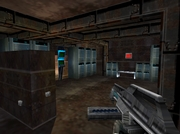
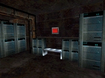
Juste
un Petit Truc comme ça, quand vous arrivez au Bunker, celui où
il faut mettre des Explosifs, vous pourrez voir un Gros Bouton Rouge.
On ne sait pas du tout à quoi il sert. On dirait un des Boutons
comme celui dans le Bateau, qui sert à déclencher l’Alarme.
|
| Cadavre
et Lance-Roquettes |
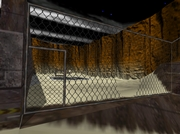


Dans
le Niveau "Infiltration" de la Zone 51, essayez de tracer
pour arriver le plus vite possible près du Grillage ou il y a un trou.
Vous verrez alors un Cadavre près du Lance Roquettes. En Mode Perfect
Dark, si vous mettez l'Energie des Ennemis entre 500 et 1000%,
vous le trouverez vivant au même endroit, portant fièrement son
Lance Roquettes. Il semble que son but ne soit que de mourir. Pourquoi
? Peut-être pour vous avertir de l'utilisation du Lance Roquettes
? Une mise en garde contre les Mines, si jamais c'est çà qui l'a
tué ? |
| Le
Coffre-Fort |
Dans
la Zone 51 (Sauvetage ou Evasion, au choix) rendez-vous aux Douches
avec quelque chose qui permet de voir à travers les Murs (Farsight XR-20,
Rayons X, au choix). Une fois dans la place, regardez à travers les
murs pour voir ou mène le Conduit d'Aération. A partir du
Fromage, il fait un coude, puis un Deuxième pour finalement se terminer
devant ce qui ressemble étrangement à un Coffre Fort. On distingue
bien la serrure sur la Photo. |
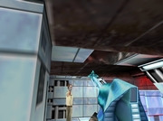
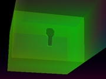


Encore
un Objectif retiré à la Dernière minute comme la Petite Ile du Barrage
dans Goldeneye ? Il semble que oui.
Ci-dessous, je me suis amusé avec le Moon-Jump à passer
au-dessus des trous, ce qui fait que l’on peut visiter ce Conduit
en entier, et aller tout au fond, là où il y a le Coffre-Fort
! Il n'y a rien dedans, c'est devenu un Décor, tout jaune. |


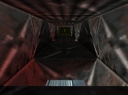

| Paroles
Cachées de Carrington |
Dans
la Zone 51, grâce au Gameshark, voilà ce qu'on peut faire...
On va dans Infiltration, et en activant le Moonjump, on peut acceder
au Toit du Hangar, celui ou on doit mettre des Explosifs. En allant
directement dessus, Carrington va dire ces Paroles. Cliquez dessus,
pour les Télécharger. Ci-dessous, des images vue de haut,
c'est beau, non ? |
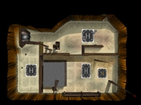

[ The air intercept
radar is controlled from that bunker ]
(Le Radar est controllé depuis ce Bunker) et pour l'autre Mp3,
une fois qu'on a placé les Explosifs, et qu'on remonte sur
le Toit, Carringont dit ces autres paroles [ The hanger lift is on the other side
of that huge door ]
(L'ascenseur du Hangar est de l'autre coté de cette énorme
porte) voilà ! Des Paroles Cachées en quelque sorte...
Rare a enlevé ces Paroles pour éviter de rendre la Mission
trop facile (il faut détruire ceci, il faut aller par là
etc) celà dit c'est drole qu'elles soient encore "écoutables"
grace au Gameshark ! |
| Roswells
Cachés |

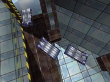
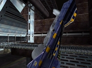

| 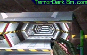 |
Allez
au fond de la Salle que vous venez de découvrir, zoomez au fond
avec le Sniper à travers la Porte, et qu'est-ce qu'on voit ?
Un autre Elvis inconscient sur le Brancard Volant ! Il y a donc bel
et bien Trois Roswells dans la Zone 51 !!! |
 |
| 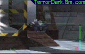 |
Il
est juste là, devant la Porte Fermée ! |
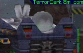 |
| 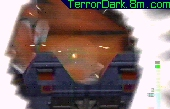 |
On
peut tirer sur lui, mais il y a la même Barrire Shield que le
Vrai Elvis lorsque vous essayer de tirer sur le Brancard. Si on continue
à lui tirer dessus, le Brancart finit au fond de la pièce. |
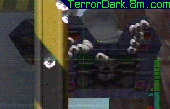 |
| 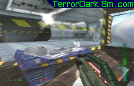 |
Il
est possible d'arriver dans la Salle, en fait. Mettez-vous en Cloaking,
et amenez des gardes près de la Porte. Ils finiront par l'ouvrir
pour vous. Dans la Salle, il y a également un Hovercraten, aucune
idée de ce qu'il faut en faire. |
 |
| 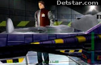 |
La
seule solution possible est que ce Maian soit celui de Maian SOS. Il
est juste placé là tout comme Mr Blonce et les Deux Gardes
du Corps de Cassandra sont en bas de l'Immeuble dans Datadyne Extraction. |
|
Mon Aventure à Moi - Merci l'Emulateur |
Avec l'Emulateur, on peut passer à travers les Murs et certains Objets, c'est pratique ! J'ai donc directement emmené Elvis sur son Brancard dans l'AUTRE Salle d'Autopsie. A ma surprise, le Deuxième Brancard (voir plus haut) est bien là, mais également un Troisième ! Dingue ! |
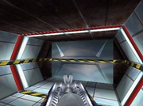 |
 |
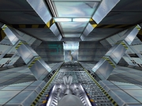 |
 |
La
Porte Fermée ! |
L'Entrée
du 2eme Labo ! |
Vers
le Fond du Labo ! |
Trois
Brancards ! |
Ce Brancard est vide. La Seule Solution possible et vraie - je pense - est que lorsqu'Elvis se réveille, c'est ce Brancard qui sert de décor. Il est juste stocké dans cette Salle comme les Deux Gardes de Cassandra de Vries et Mr Blonde dans Datadyne - Extraction. Et le Brancard avec le Troisième Maian dedans (voir plus haut) est tout simplement le Elvis de la Cinématique lorsqu'il se réveille. Tout s'explique. |
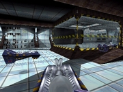 |
 |
Il y a bien une Caisse Hovercrate juste derrière la Porte Brune. On ne peut pas passer au travers, comme les Brancards. Je me suis amusé à voir si elle explosait. Si elle explose, c'est celle de la Mission d'avant, non ? Et bien, elle n'a pas explosé, donc je ne sais vraiment pas ce qu'est cette Caisse Hovercrate... |
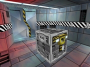 |
 |
 |
 |
La
Caisse Hovercrate ! |
On
la sort du Couloir... |
Prêts
? Boum ? |
Rien
!!! Pas de Boum ! |
J'ai eu une idée toute bête : et si à la place d'Elvis, je ramenais l'autre Maian ? Et bien, ça fait rien non plus, le Brancard ne se fixe même pas comme quand on dépose Elvis. Rien, que dalle. Par contre, un petit détail rigolo, quand on passe à travers une porte, on voit des trucs, comme... la Soucoupe ! Ca c'est juste le Jeu qui bugue un peu... |
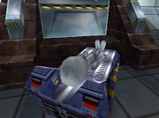 |
 |
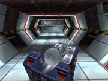 |
|
Le
Faux Elvis ! |
A
Travers une Porte ! |
La
Soucoupe Volante ! |
Le
Faux Elvis ! |
Ensuite, j'ai quand même ramené le Vrai Elvis là où il fallait, et ça nous donne 2 Maians dans la même pièce. Rien de spécial, sauf que lorsque vous réanimez Elvis, le Deuxième Brancard est dans la Cinématique ! Cool ! Ca donne des jolies images comme vous en voyez ci-dessous. |
 |
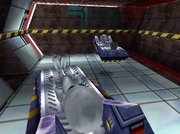 |
|
 |
Le
Vrai Elvis ! |
Deux
Maians ! |
Deux
Maians ! |
Elvis
est guéri ! |
| La
Cinématique avec Deux Maians |
 |
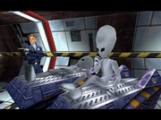 |
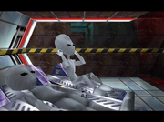 |
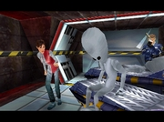 |
Toujours dans l'optique de m'amuser, j'ai carrément décidé d'emporter avec moi le Faux Elvis hors de la Base. Et on le peut ! Ca donne des images rigolotes comme vous en voyez juste en dessous. Pour la première, ça s'est passé lorsqu'on grimpe l'escalier en métal, le Brancard se renverse un peu. Pas de souci, le Maian ne tombe pas. |
 |
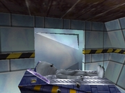 |
|
Waouh
! |
Presque
dehors ! |
On
sort ? |
Le Maian est dehors. Elvis est mort, mais j'ai réussi à en sauver un autre ! Je me suis amusé à me promener aux alentours, et comme je m'en doutais, comme l'Exterieur ne sert pas, le Jeu enlève tout ce qui pourrait le ralentir : mobilier, Ordinateurs etc. Tout est très vide, et il ne se passe rien. Normal en fait ! |
|
 |
 |
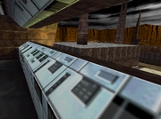 |
Dehors
! |
Près
du Bunker ! |
Le
Sous-Sol Vide... |
Cette
Salle est Vide aussi. |